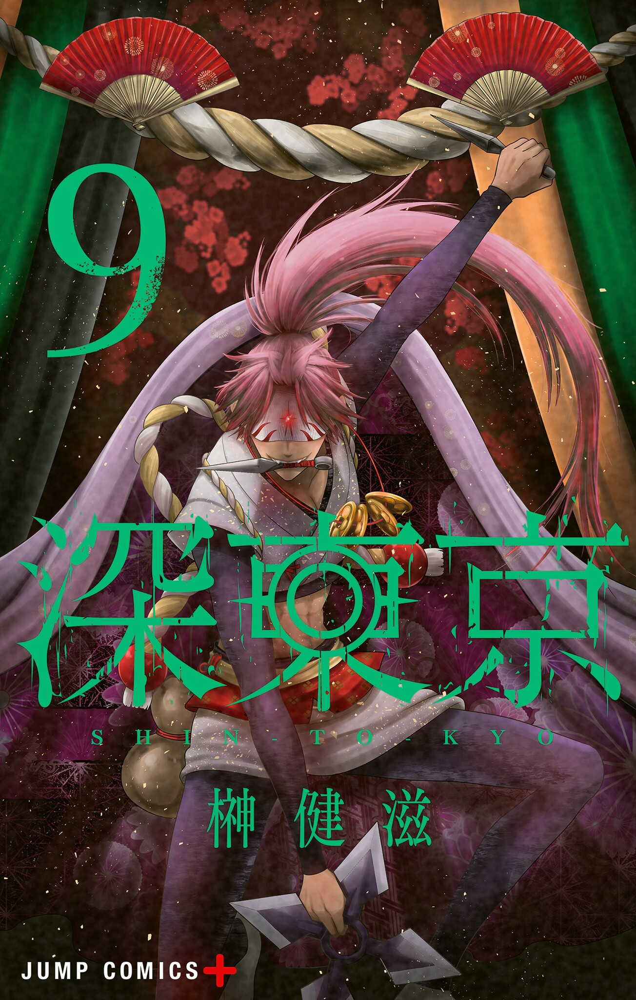

Tokyo Underworld
Auteur : Sakaki Kenji
Artiste : Sakaki Kenji
Année de publication : 2022
Genres : Horreur, Mystérieux
Status : En cours
Synopsis
Selon la légende urbaine, les coupables sont condamnés à tomber dans les Enfers de Tokyo. Là, ils ne bénéficient d'aucune pitié et sont jugés sans pitié pour leurs crimes de la manière la plus cruelle qui soit !